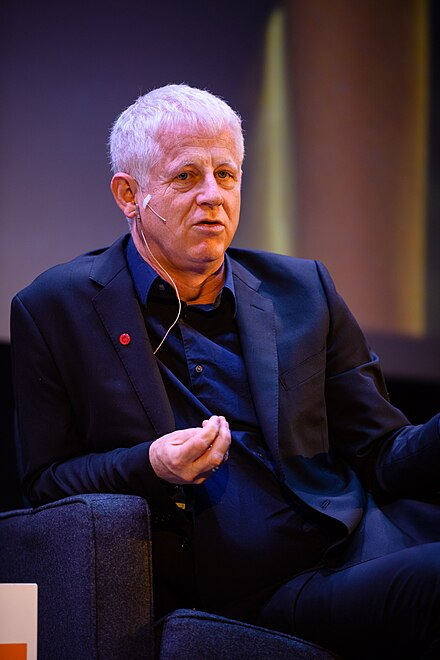

-
Development
Initially, Curtis started writing with two distinct and separate films in mind, each featuring expanded versions of what would eventually become storylines in Love Actually: those featuring Hugh Grant and Colin Firth. He changed tack and became frustrated with the process. Partly inspired by the films of Robert Altman as well as films such as Pulp Fiction, and inspired by Curtis having become "more interested in writing a film about love and what love sort of means" he had the idea of creating an ensemble film. The film initially did not have any sort of Christmas theme, although Curtis's penchant for such films eventually caused him to write it as one.
Curtis's original concept for the film included fourteen different scenarios, but four of them were cut (two having been filmed). The scene in which Colin attempts to chat up the female caterer at the wedding appeared in drafts of the screenplay for Four Weddings and a Funeral, but was cut from the final version. The music video for Billy Mack's song, "Christmas Is All Around", is a tribute to Robert Palmer's 1986 video, "Addicted to Love". Curtis has spoken negatively about the editing process for the film, which he labelled in 2014 as a "catastrophe" and "the only nightmare scenario that I've been caught in". The film was rushed in order to be ready for the 2003 Christmas season which he likened to "three-dimensional chess". For the scene in which Rowan Atkinson's character Rufus annoys Harry, Alan Rickman's reaction was reportedly genuine, having been "driven insane" by the time constraints. Hugh Grant disliked filming the dance scene as he called it "excruciating" and "absolute hell". In a 2023 interview, Curtis would later call the card scene "a bit weird".
-

The film's director, Richard Curtis
-
Casting
Ant & Dec played themselves in the film with Nighy's character referring to Dec as "Ant or Dec". This refers to the common mistaking of one for the other, owing to their constant joint professional presence as a comedy and presenting duo. The veteran actress Jeanne Moreau is seen briefly, entering a taxi at the Marseille Airport. The soul singer Ruby Turner appears as Anderson's mother, one of the backing singers at the school Christmas pageant. Helder Costa plays Mr Barros, Aurelia's father. He is a veteran actor in Portuguese cinema. Thompson used the experience of her own marriage breaking up for the role of Karen. Joe Alwyn auditioned for the role of Sam; Alwyn read scenes with Grant and Curtis.
Curtis cast his mother-in-law, actress Jill Freud, as the Prime Minister's cleaner. Curtis cast his daughter Scarlett in the film; she was given the choice of being an angel or a lobster, and played the part of Lobster number 2 in the nativity play, on the condition that she meets Keira Knightley. Curtis originally had two actors in mind for the part of Mack, but he could not decide and then told casting director Mary Selway to find someone who would do the part well but whom he would never think to cast; she suggested Nighy.
-
Locations
Most of the film was made on location in London, including Trafalgar Square, the central court of Somerset House in the Strand, Grosvenor Chapel on South Audley Street near Hyde Park, St Paul's Church, Clapham, the Millennium Bridge, Selfridges department store on Oxford Street, Lambeth Bridge, the Tate Modern in the former Bankside Power Station, Canary Wharf, Marble Arch, St. Luke's Mews off All Saint's Road in Notting Hill, Chelsea Bridge, the OXO Tower, London City Hall, Poplar Road in Herne Hill, Elliott School in Pullman Gardens, Putney, Heathrow Airport and the Marseille Airport. Scenes set in 10 Downing Street were filmed at Shepperton Studios.
-
Standing up to the US president
Following Tony Blair's resignation as Prime Minister, pundits and speculators commented on a potential anti-American shift in Gordon Brown's cabinet as a "Love Actually moment", referring to the scene in which Hugh Grant's character stands up to the US president. In 2009, during President Barack Obama's first visit to the UK, Chris Matthews referred to the president in Love Actually as an example of George W. Bush and other former presidents' bullying of European allies. Commenting on this, Mediaite's Jon Bershad described the U.S. president character as a "sleazy Bill Clinton/George W. Bush hybrid". In the scene in question, the swaggering president bullies the prime minister and then sexually harasses a member of the household staff. In September 2013, David Cameron made a speech in reply to Russia's comment that Britain was a small insignificant country, which drew comparisons with Hugh Grant's speech during the film.
-
Cut Storyline
One storyline consisting of two scenes, featuring the only gay love story, was cut and not included. In the first scene, Anne Reid, as the headmistress of Karen's children's school, is revealed going home to her terminally ill partner, Geraldine, played by Frances de la Tour. In the second scene, while speaking at the Christmas concert, Karen acknowledges Geraldine's recent death. Curtis said he regretted losing this storyline.